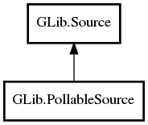

GLib.PollableSource Reference Manual
Packages
gio-2.0
GLib
PollableSource
PollableSource
PollableSource.full
set_callback
PollableSource
Object Hierarchy:

Description:
public
class
PollableSource
:
Source
Namespace:
GLib
Package:
gio-2.0
Content:
Creation methods:
public
PollableSource
(
Object
pollable_stream)
public
PollableSource.full
(
Object
pollable_stream,
Source
? child_source,
Cancellable
? cancellable =
null
)
Methods:
public
void
set_callback
(
owned
PollableSourceFunc
func)